AXIMA (ZYNDRAX)
Contracted level design on Axima — a fast-paced open-world monster tamer with 100+ creatures and multiplayer. Designed hand-crafted level blockouts, decorated scenes, and traversal-based puzzles for the Ruins area. Also built custom level design tooling that made the workflow significantly more efficient.
>> WISHLIST ON STEAM (opens in new tab)// GAMEPLAY_VIDEO
[ I can't include a gameplay video here until the project launches. ]
Until then, check out the screenshots!
// KEY_RESPONSIBILITIES
Designed the full Ruins area from concept map to blocked-out, playable geometry in Unreal Engine 5. Translated exploration and pacing goals into spatial decisions — establishing sight lines, chokepoints, and traversal routes before any environmental art was placed.
Drafted custom level design tools to speed up the environmental art pass — procedural walls built from static mesh instances, scalable decals, and tileable textures. These tools masked seams in the provided asset library and made iterating on the level significantly faster and cleaner.
Designed traversal-based puzzles integrated into the Ruins layout to support Axima's exploration loop. Each puzzle was built around the game's movement system and paced to give players moments of discovery and reward without breaking flow. [ADD YOUR SPECIFIC PUZZLE DETAILS HERE]
// LEVEL_DESIGN_BREAKDOWN
INITIAL SKETCH
Planned the Ruins layout in Aseprite before touching Unreal — two separate layers because the upper and lower sections of the ruins overlap spatially. Working flat first let me map the full traversal logic without the noise of 3D geometry getting in the way.
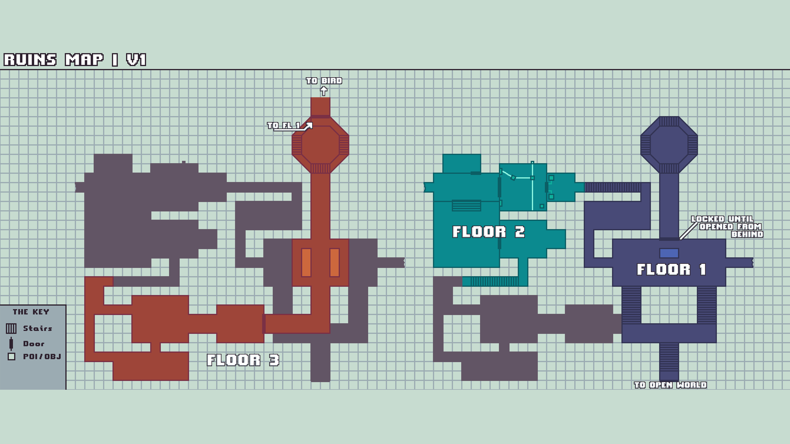
ANNOTATED SKETCH
The main patch traces the intended player route as a loop — entering low, sweeping outward, and returning elevated. The circular flow minimizes backtracking while letting the player read the same space from multiple angles as they progress.
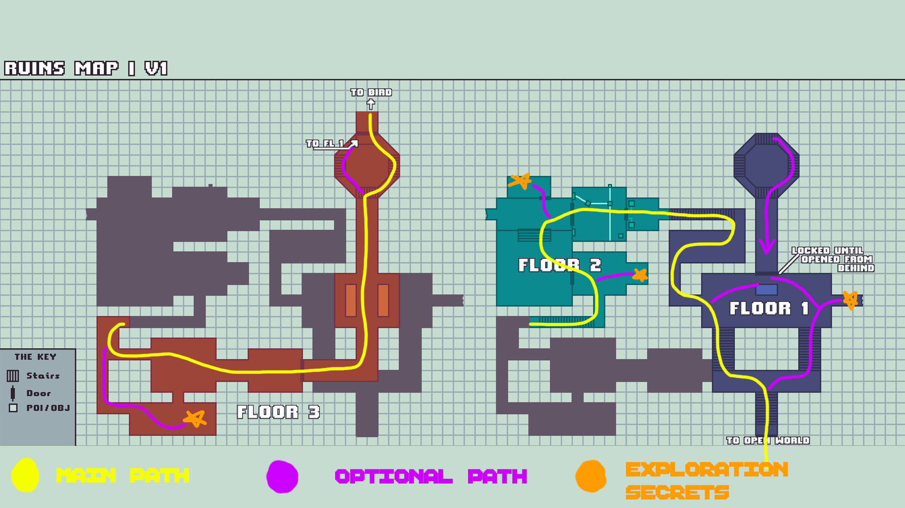
LEVEL BLOCKOUT
Rough geometry only — no art, no decoration. The blockout locked in traversal feel, scale, and sight lines before any environmental work began. Every pacing and verticality decision was made here, so the art pass had a stable foundation to build on.
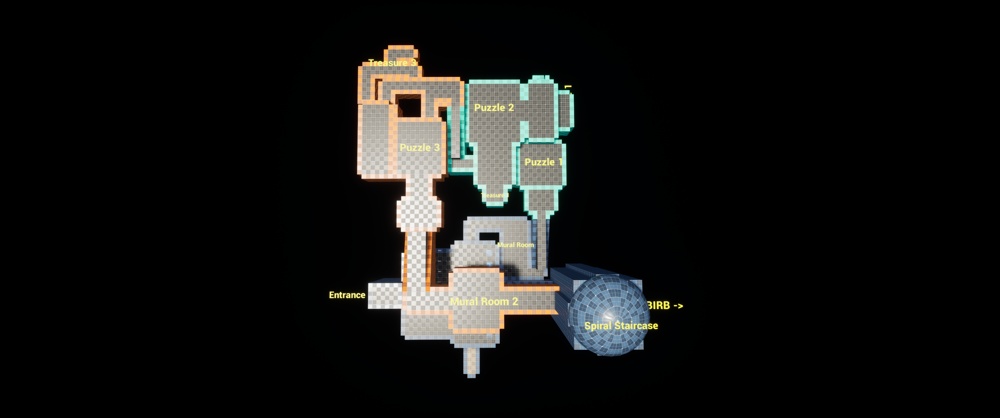
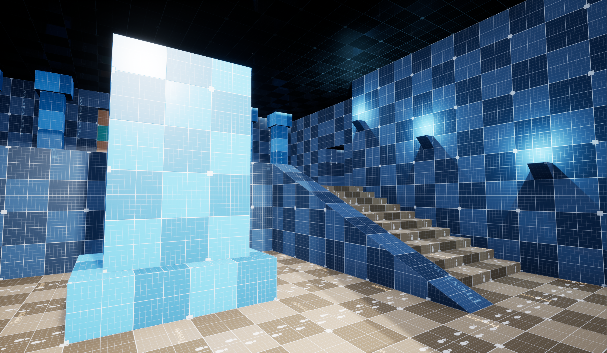
VERTICALITY
Progression moves upward throughout the Ruins. Secrets and side passages were kept at or below the player's current elevation — reward-seeking never punishes forward momentum. Progress doors and stairs exclusively lead up, so players always have a spatial read on where they are in the arc.
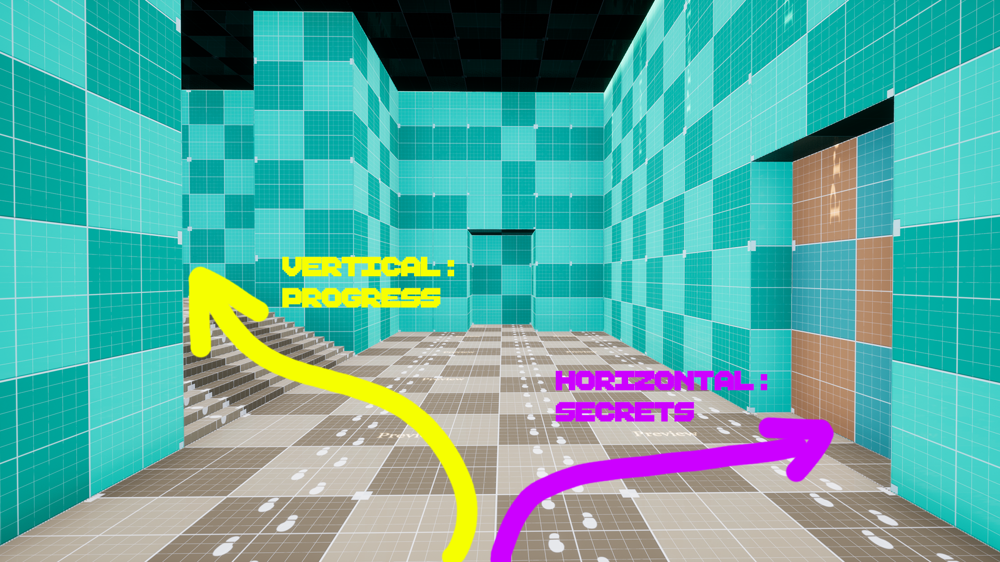
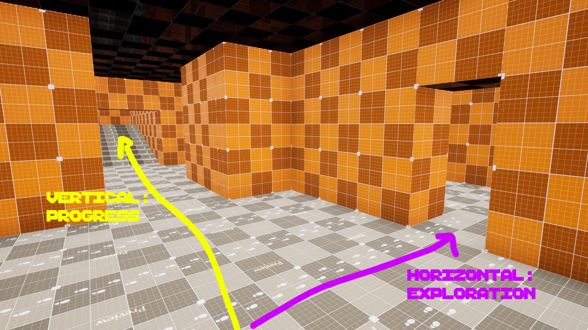
GOLDEN LIGHTING, BREADCRUMBS, SECRETS
Architecture, lighting, and prop placement guide the player's eye toward the intended route without explicit waypoints. Secrets are hinted at through deliberate breaks in visual rhythm — a gap in a wall, a slightly different texture — rewarding curiosity without telegraphing the reward outright.
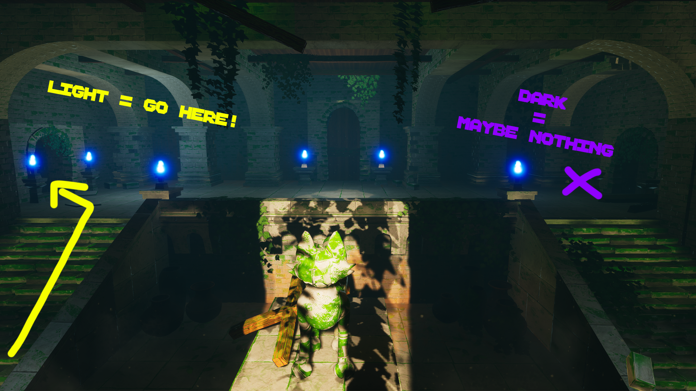
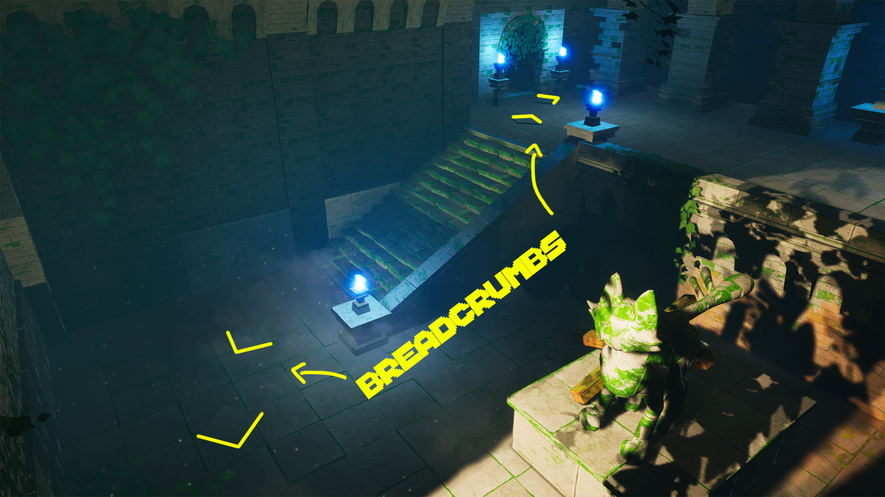
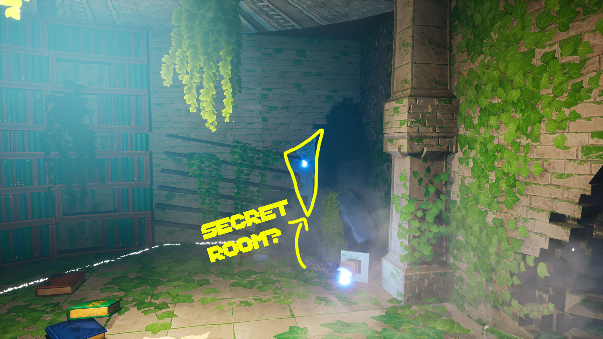
BEFORE / AFTER
The same area before and after the environmental art pass. Traversal geometry and spatial design are unchanged — the art pass adds material variation, atmospheric read, and visual interest without touching any of the underlying design decisions.
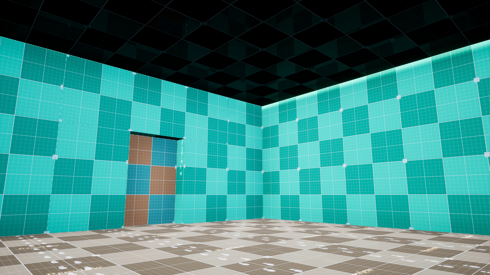
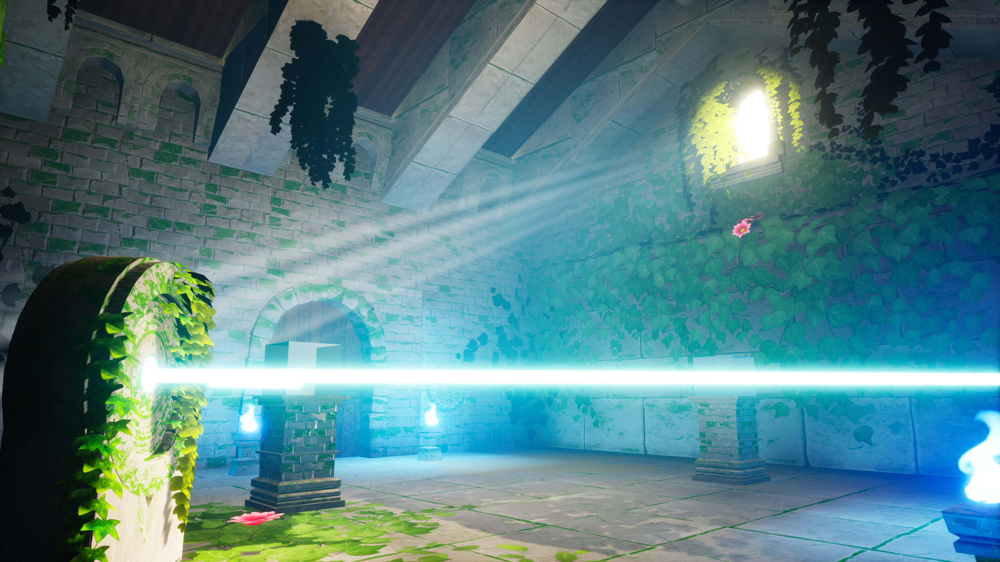
VISUAL CUES — PUZZLE HINT USING LIGHTING
Lighting doubles as puzzle instruction. A single directed light source draws the eye to the interactive element before the player consciously registers why. The solution becomes intuitive before it becomes explicit — no UI, no waypoint, just the environment doing the teaching.
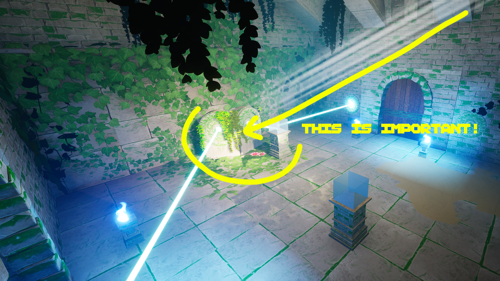
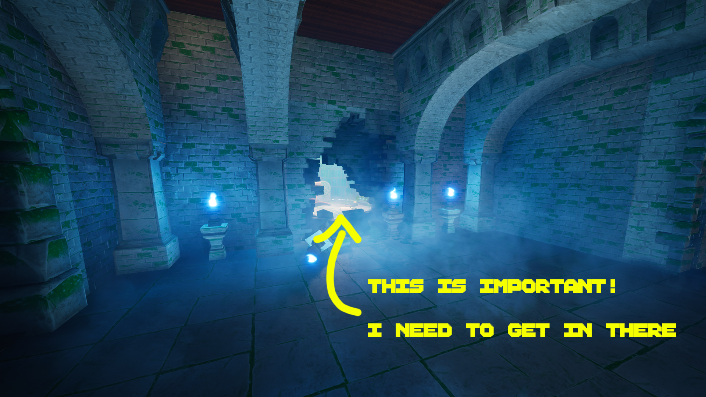
// SCREENSHOT_LOG